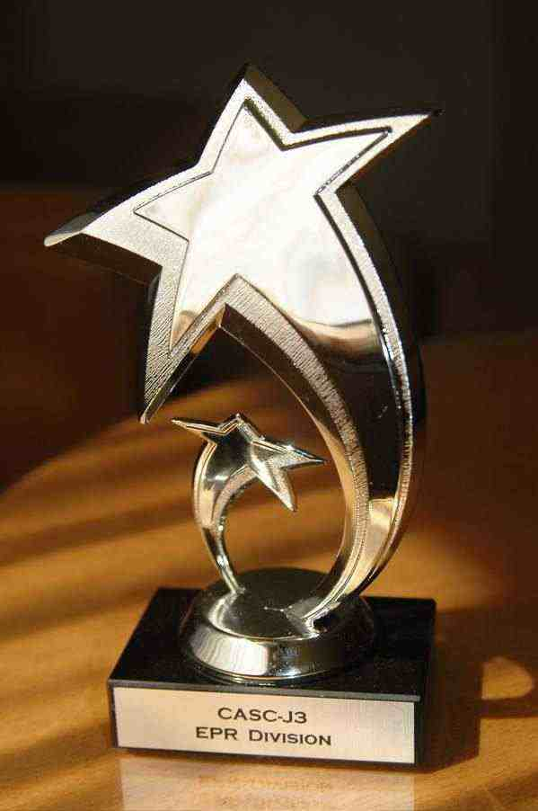

 The automated theorem proving systems competition CASC is held each year at the major conference CADE/IJCAR (International Conference on Automated Reasoning) in the field. The theorem prover Darwin, jointly developed at the University of Iowa, USA (Alexander Fuchs, Cesare Tinelli) and NICTA's Logic and Computation program (Peter Baumgartner, Canberra) participated at this years competition during IJCAR 2006 in Seattle, USA.
Darwin was entered in four categories. It won the so-called EPR category (function-free clause logic, which is relevant, for instance, in database contexts) and scored third in the SAT category (satisfiable first-order logic formulas).
In the 2007 edition of CASC, Darwin won the EPR category again and scored third in the SAT and FNT categories.